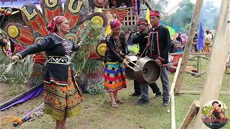
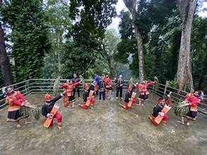

Overview
The cultural heritage of Zamboanga del Sur is a rich tapestry woven from the traditions of its three major communities: the indigenous Subanen, the Muslim Moro peoples, and the Christian settler communities from the Visayas and Luzon.
Indigenous Traditions
The Subanen people maintain a living cultural heritage that includes traditional music, dance, weaving, and oral literature. Their betel nut rituals, healing ceremonies, and communal gatherings called gupaan are integral parts of their social life.
Moro Heritage
The Muslim communities of the province preserve traditions deeply influenced by Islamic culture, including the playing of kulintang music, the wearing of malong fabric, and observance of Islamic holidays and rites of passage.
Settler Culture
Christian settlers brought Visayan and Luzon cultural practices that blended with local traditions. Catholic fiestas, folk dances, and regional cuisine became part of the local cultural mix, creating a uniquely diverse provincial identity.
Material Culture
Traditional crafts such as weaving, pottery, and woodcarving are practiced in various communities. Subanen woven cloth is a treasured cultural artifact. The province also has examples of traditional architecture in older barangays.
Preservation Efforts
Local government units, schools, and cultural organizations work to document and promote the province's heritage through cultural festivals, museum collections, and community-based programs that encourage younger generations to learn traditional arts.
Key Facts
- Major Cultural Groups: Subanen, Moro, Settler communities
- Traditional Craft: Weaving and beadwork
- Heritage Sites: Old churches, ancestral houses
- Oral Traditions: Epic poetry and folk songs
- Cultural Events: Megayon Festival, tribal gatherings